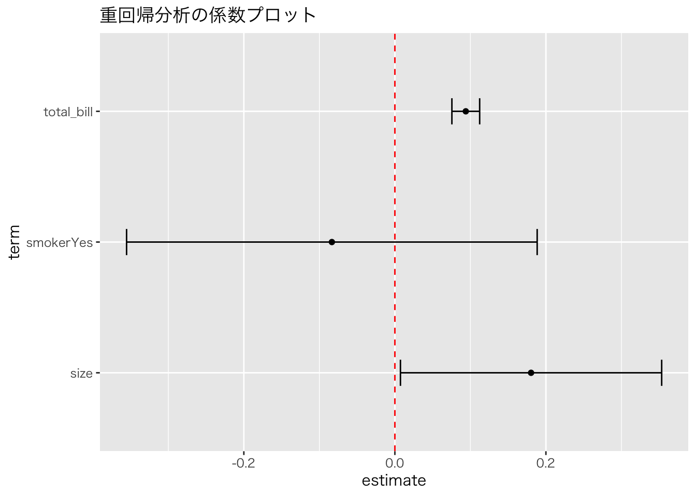

library(tidyverse)
library(broom)
url <- "https://raw.githubusercontent.com/mwaskom/seaborn-data/master/tips.csv"
tips <- read_csv(url)
# 重回帰モデル：チップを「支払額」と「人数」で説明する
model_multi <- lm(tip ~ total_bill + size, data = tips)
summary(model_multi)
#>
#> Call:
#> lm(formula = tip ~ total_bill + size, data = tips)
#>
#> Residuals:
#> Min 1Q Median 3Q Max
#> -2.9279 -0.5547 -0.0852 0.5095 4.0425
#>
#> Coefficients:
#> Estimate Std. Error t value Pr(>|t|)
#> (Intercept) 0.668945 0.193609 3.455 0.00065 ***
#> total_bill 0.092713 0.009115 10.172 < 2e-16 ***
#> size 0.192598 0.085315 2.258 0.02487 *
#> ---
#> Signif. codes: 0 '***' 0.001 '**' 0.01 '*' 0.05 '.' 0.1 ' ' 1
#>
#> Residual standard error: 1.014 on 241 degrees of freedom
#> Multiple R-squared: 0.4679, Adjusted R-squared: 0.4635
#> F-statistic: 105.9 on 2 and 241 DF, p-value: < 2.2e-16第12回 重回帰分析と因果推論

複雑な現実を解き明かす
「勉強すれば成績は上がる」と言うが、成績に影響するのは勉強時間だけだろうか？ 地頭の良さ、塾の有無、親の収入、睡眠時間……現実は無数の要因が絡み合っている。
たった一つの原因で結果が決まることなど、世の中にはほとんどない。 だからこそ、複数の要因を同時に扱う 重回帰分析 が必要になる。
今回は、絡み合った糸をほぐし、真の原因（因果関係）を見つけ出すための探偵技術を学ぼう。
1. 複数のツマミを操る：重回帰分析
データ分析を「ミキシングコンソール」の操作だと想像してほしい。 単回帰分析は「ボリューム」という一つのツマミしか持たなかった。 重回帰分析では、「ボリューム」「低音」「高音」など、複数のツマミ（説明変数）を同時に操作して、最適なサウンド（予測）を作り出す。
\[ \text{結果} \ (Y) = \text{切片} + (\beta_1 \times \text{要因1}) + (\beta_2 \times \text{要因2}) + \dots + \text{誤差} \]
「他を固定して」見る技術 (Ceteris Paribus)
重回帰分析の凄さは、「他の条件が同じならば」 という仮定を数式の中で実現できる点にある。
例えば、チップ額 (\(Y\)) を支払額 (\(X_1\)) と客数 (\(X_2\)) で説明する場合：
係数 \(\beta_1\) は、「客数が同じグループの中で比べたとき、支払額が1ドル増えるとチップはどうなるか」を表す。
あたかも実験室で条件を統制したかのように、純粋な効果を取り出せるのだ。
実践: 支払いと人数の分離
解釈: - total_bill: 0.093 - 「もし人数が同じなら」、支払いが1ドル増えるごとにチップは約9.3セント増える。 - size: 0.193 - 「もし支払額が同じなら」、人数が1人増えるごとにチップは約19.3セント増える。
2. 実践的モデリング
現実は数値データだけではない。「性別」や「曜日」といった文字データ（カテゴリ変数）も分析に使える。
ダミー変数：スイッチのON/OFF
「喫煙席か？」のような情報は、計算できるよう 0 (No) と 1 (Yes) に変換する。これをダミー変数と呼ぶ。
# 喫煙者ダミー（Yes/No）を追加
model_dummy <- lm(tip ~ total_bill + size + smoker, data = tips)
tidy(model_dummy)smokerYes の係数は、喫煙席に座ることで生じる「上乗せ分」を表す。
交互作用：「相乗効果」に気づく
「ビールと枝豆」のように、組み合わせることで効果が変わることもある。 例えば、「喫煙者の方が、支払額に対するチップの払いっぷりが良い（傾きが急）」かもしれない。
# : は交互作用のみ、* は主効果＋交互作用
model_inter <- lm(tip ~ total_bill * smoker, data = tips)
summary(model_inter)
#>
#> Call:
#> lm(formula = tip ~ total_bill * smoker, data = tips)
#>
#> Residuals:
#> Min 1Q Median 3Q Max
#> -2.6789 -0.5238 -0.1205 0.4749 4.8999
#>
#> Coefficients:
#> Estimate Std. Error t value Pr(>|t|)
#> (Intercept) 0.360069 0.202058 1.782 0.076012 .
#> total_bill 0.137156 0.009678 14.172 < 2e-16 ***
#> smokerYes 1.204203 0.312263 3.856 0.000148 ***
#> total_bill:smokerYes -0.067566 0.014189 -4.762 3.32e-06 ***
#> ---
#> Signif. codes: 0 '***' 0.001 '**' 0.01 '*' 0.05 '.' 0.1 ' ' 1
#>
#> Residual standard error: 0.9785 on 240 degrees of freedom
#> Multiple R-squared: 0.506, Adjusted R-squared: 0.4998
#> F-statistic: 81.95 on 3 and 240 DF, p-value: < 2.2e-16total_bill:smokerYes が有意なら、2つの要因には相乗効果（あるいは相殺効果）があると言える。
3. 真犯人を探せ：因果推論とバイアス
「相関関係があっても因果関係とは限らない」。耳にタコができるほど聞いた言葉だが、その正体は何だろうか？ 最大の原因は、交絡因子（こうらくいんし） という「裏で糸を引く黒幕」の存在だ。
典型例：教育と賃金のミステリー
「高学歴な人は給料が高い」というデータがある。 しかし、これは純粋に教育のおかげだろうか？ もしかすると、「元々の能力が高い人」が「高学歴になりやすく」、かつ「給料も高い」だけかもしれない。
この「能力」こそが交絡因子だ。これを無視して分析すると、教育の効果を過大評価してしまう（除外変数バイアス）。
シミュレーション：バイアスの除去
重回帰分析を使えば、この黒幕（交絡因子）を表舞台に引きずり出し、無力化できる。
set.seed(123)
n <- 200
# 真実はこうだ：
ability <- rnorm(n, 100, 15) # 能力（黒幕）
education <- 12 + 0.05 * ability + rnorm(n, 0, 2) # 能力が高いと教育も長い
wage <- 20 + 2 * education + 0.3 * ability + rnorm(n, 0, 5) # 賃金は両方で決まる
sim_data <- tibble(wage, education, ability)
# 1. 失敗：黒幕（能力）を無視
lm(wage ~ education, data = sim_data) %>% coef()
#> (Intercept) education
#> 41.674916 2.494524
# 2. 成功：黒幕をモデルに入れてコントロール
lm(wage ~ education + ability, data = sim_data) %>% coef()
#> (Intercept) education ability
#> 22.7681915 1.8733537 0.2955295能力をモデルに加えることで、教育の係数は真の値（2.0）に近づく。 重回帰分析は、予測だけでなく、偏りのない因果推論を行うための強力なツールなのだ。
4. 良いモデルの選び方
変数を増やせば増やすほどモデルは現実に合致していくが、やりすぎは禁物。
多重共線性（マルチコ）：似た者同士の喧嘩
似たような変数（例：身長と座高）を両方入れると、お互いが邪魔をし合って、係数の推定がおかしくなる。 VIF という指標チェックし、10を超えていたら要注意。
library(car)
vif(model_multi)
#> total_bill size
#> 1.557586 1.557586調整済み決定係数：シンプルさへのボーナス
通常の決定係数 \(R^2\) は、無駄な変数を足しても増えてしまう。 「変数の数」のペナルティを加味した 調整済み決定係数 (Adjusted \(R^2\)) を使おう。 情報量規準 AIC や BIC も、シンプルで高性能なモデルを選ぶための指標だ。
# 調整済みR²の比較
model_simple <- lm(tip ~ total_bill, data = tips) # 単回帰モデルの再定義
models <- list(
"Simple" = model_simple,
"Multi" = model_multi,
"Dummy" = model_dummy
)
sapply(models, function(m) summary(m)$adj.r.squared)
#> Simple Multi Dummy
#> 0.4543712 0.4634533 0.4620370係数の可視化
数字の羅列を見るよりも、グラフで可視化したほうが直感的に理解できる。
theme_set(theme_gray(base_family = "HiraKakuProN-W3")) # [対象注意] Mac用設定
tidy(model_dummy, conf.int = TRUE) %>%
filter(term != "(Intercept)") %>%
ggplot(aes(x = estimate, y = term)) +
theme_gray(base_family = "HiraKakuProN-W3") + # [対象注意] Mac用設定
geom_point() +
geom_errorbarh(aes(xmin = conf.low, xmax = conf.high), height = 0.2) +
geom_vline(xintercept = 0, color = "red", linetype = "dashed") +
labs(title = "重回帰分析の係数プロット")
最終課題
自分の興味のあるデータセット（Rの組み込みデータやWeb上のオープンデータ）を見つけ、以下の分析レポートを作成してください。
- 問いの設定: 何を明らかにしたいか（例：燃費に影響するのは重量か馬力か？）
- データの可視化: ヒストグラムや散布図による概観。
- モデリング: 適切な回帰モデルの構築。
- 結果の解釈: 推定された係数の意味と、統計的な妥当性。
講義のまとめ
本講義では、データの読み込みから可視化、基本的な統計的推測、そして回帰分析による因果へのアプローチまでを学びました。 これらはデータサイエンスの基礎体力となるスキルです。 さらに深く学びたい方は、計量経済学や機械学習のコースへ進むことを推奨します。
練習問題
- モデル選択の実践:
mtcarsデータセットにおいて、燃費 (mpg) を説明する最適な変数の組み合わせを、調整済み \(R^2\) や AIC を用いて探してください。 - 交互作用の解釈: 先ほどの喫煙者と支払額の交互作用モデルについて、具体的な数値を用いて、「喫煙者なら10ドル増えるごとにチップはどう変わるか」を説明してください。
- 交絡の発見: あなたの身の回りで「相関はあるが因果ではない（共通の原因がある）」と思われる例を挙げ、因果図を描いて説明してください。